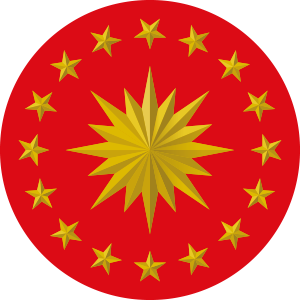
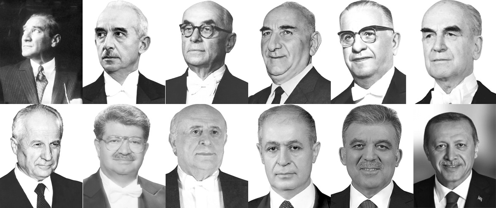
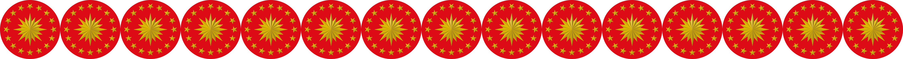
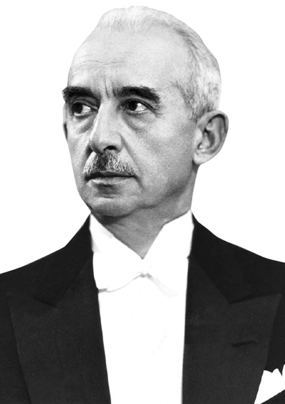
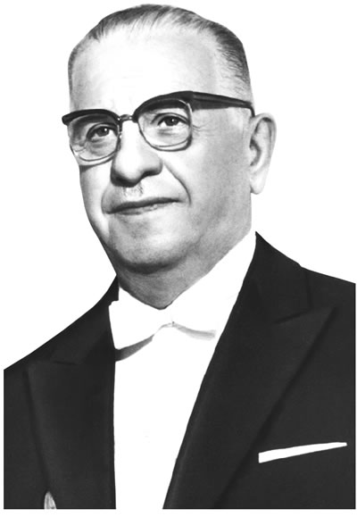
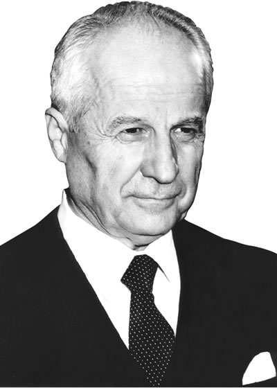
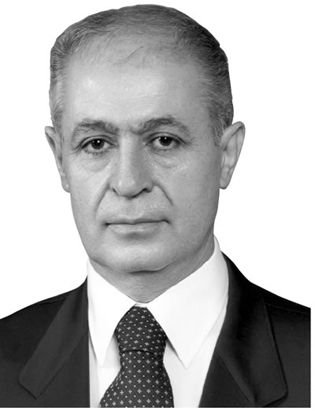

Cumhurbaşkanlarımız



Not:Cumhurbaşkanlarımız ile daha fazla bilgi edinmek için sarı butona tıklayınız.
1-Mustafa Kemal Atatürk
Görev Süresi: 29 Ekim 1923 - 10 Kasım 1938
2-İsmet İnönü

Görev Süresi: 11 Kasım 1938 - 22 Mayıs 1950
3-Celal Bayar
Görev Süresi: 22 Mayıs 1950 - 27 Mayıs 1960
4-Cemal Gürsel
Görev Süresi: 27 Mayıs 1960 - 28 Mart 1966
5-Cevdet Sunay

Görev Süresi:28 Mart 1966 - 28 Mart 1973
6-Fahri Korutürk
Görev Süresi:6 Nisan 1973 - 6 Nisan 1980
7-Kenan Evren

Görev Süresi: 9 Kasım 1982 - 9 Kasım 1989
8-Turgut Özal
Görev Süresi: 9 Kasım 1989 - 17 Nisan 1993
9-Süleyman Demirel
Görev Süresi: 16 Mayıs 1993 - 16 Mayıs 2000
10-Ahmet Necdet Sezer

Görev Süresi: 16 Mayıs 2000 - 28 Ağustos 2007
11-Abdullah Gül
Görev Süresi: 28 Ağustos 2007 - 28 Ağustos 2014
12-Recep Tayyip Erdoğan
Görev Süresi: 10 Ağustos 2014 - Günümüz...